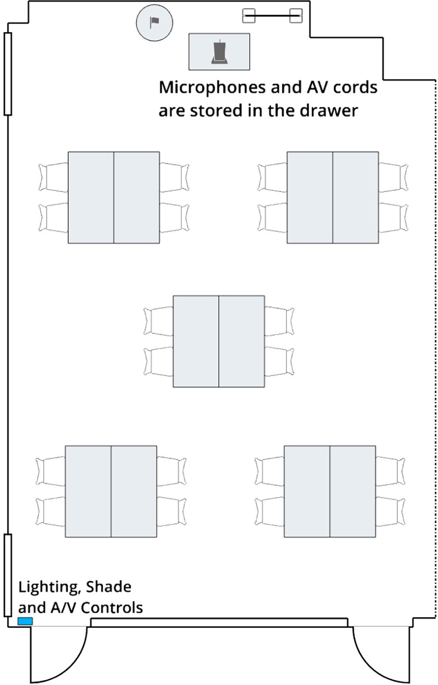
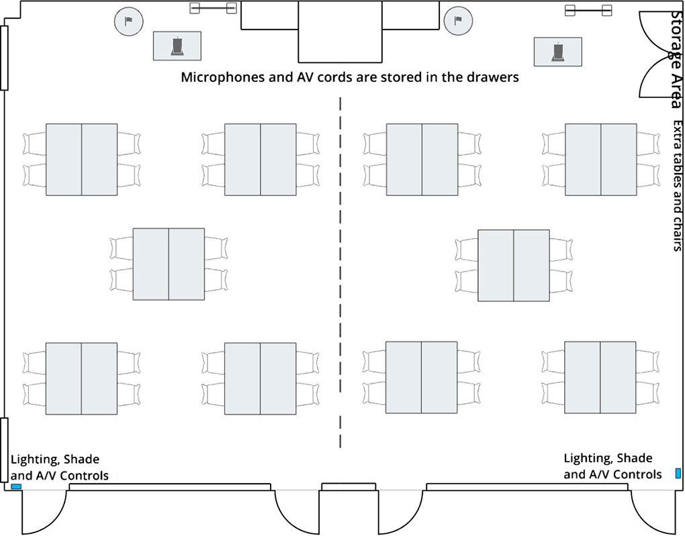
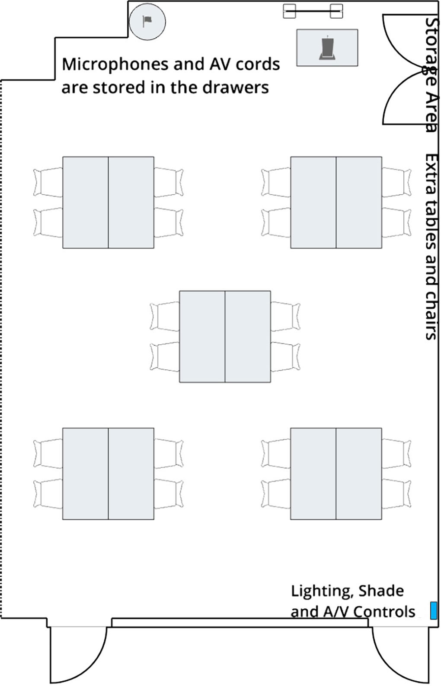

Highlands Ranch Meeting Room Guides
Highlands Ranch Event Hall A
Your event is reserved under our Self-Service package. You are responsible for setup, resetting the space per the floor plan of Event Hall A or Event Hall A & B, and connecting any A/V equipment following the provided instructions. Visit the nearest service desk for more assistance. Review terms and conditions at dcl.org/meeting-room-guidelines. To inquire about additional services, contact the Event + Hospitality department at (303) 688-7605.
Resetting the Floor Plan of Event Hall A:
Resetting the Floor Plan of Event Hall A & B:
Using the Presentation System:
- Locate the wall control panel.
- Touch the screen to begin.
- Enter the password "1234". If you are using both Event Halls, ask a staff member for assistance in combining the screens.
- Select your presentation source:
- Wall Plate Connect your Apple or other device with a cable to the port in the wall plate closest to the podium. If no cables are available, ask a staff member for assistance.
- Wireless (AirMedia for PC and Android)
- Connect your device to DCL's public wireless network, "wireless.dclibraries".
- Follow the on-screen instructions to cast using the Crestron AirMedia app:
- PC: Open a browser, enter the IP address shown on the presentation screen, download and run the Crestron AirMedia app and enter the 4-digit code.
- Android: Download the Crestron AirMedia app for Android, open it and enter the 4-digit code.
- Blu-ray Player Locate the Blu-ray player, power it on and insert your disc. Ask a staff member for assistance if needed.
- Use a microphone:
- Locate a handheld or lavalier microphone.
- Power it on by holding the power button or sliding the power switch.
- Warning: Do not change the channel on the microphone, as it may prevent it from working with the sound system.
- Use the up and down arrows on the wall control panel to adjust volume.
- End your session:
- Press "Clear Source" on the wall control panel.
- Press the power button to turn off the system.
- Return any borrowed cables or adapters to a staff member.
Highlands Ranch Event Hall B
Your event is reserved under our Self-Service package. You are responsible for setup, resetting the space per the floor plan of Event Hall B or Event Hall A & B, and connecting any A/V equipment following the provided instructions. Visit the nearest service desk for more assistance. Review terms and conditions at dcl.org/meeting-room-guidelines. To inquire about additional services, contact the Event + Hospitality department at (303) 688-7605.
Resetting the Floor Plan of Event Hall B:
Resetting the Floor Plan of Event Hall A & B:
Using the Presentation System:
- Locate the wall control panel.
- Touch the screen to begin.
- Enter the password "1234". If you are using both Event Halls, ask a staff member for assistance in combining the screens.
- Select your presentation source:
- Wall Plate Connect your Apple or other device with a cable to the port in the wall plate closest to the podium. If no cables are available, ask a staff member for assistance.
- Wireless (AirMedia for PC and Android)
- Connect your device to DCL's public wireless network, "wireless.dclibraries".
- Follow the on-screen instructions to cast using the Crestron AirMedia app:
- PC: Open a browser, enter the IP address shown on the presentation screen, download and run the Crestron AirMedia app and enter the 4-digit code.
- Android: Download the Crestron AirMedia app for Android, open it and enter the 4-digit code.
- Blu-ray Player Locate the Blu-ray player, power it on and insert your disc. Ask a staff member for assistance if needed.
- Use a microphone:
- Locate a handheld or lavalier microphone.
- Power it on by holding the power button or sliding the power switch.
- Warning: Do not change the channel on the microphone, as it may prevent it from working with the sound system.
- Use the up and down arrows on the wall control panel to adjust volume.
- End your session:
- Press "Clear Source" on the wall control panel.
- Press the power button to turn off the system.
- Return any borrowed cables or adapters to a staff member.